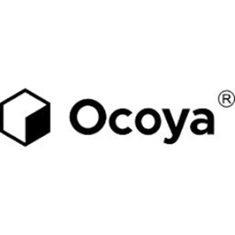

Najbolji AI Alati za Društvene Mreže 2026 – 9 Testiranih
Ovaj vodič pokriva četiri ključne kategorije: kreiranje sadržaja (AI generirani opisi, skripte i vizuali), raspoređivanje i automatizacija (objava na više platformi automatski), analitika i optimizacija (praćenje što funkcionira i poboljšanje dosega), te viralno istraživanje (analiza što pokreće milijune pregleda). Bez obzira jeste li kreator koji želi brže rasti, influencer koji upravlja više platformi ili vlasnik malog poduzeća koji želi se istaknuti — ovi alati su napravljeni za vas. Svaki alat ispod testiran je i recenziran od strane WebTools tima.
Neki linkovi na ovoj stranici su affiliate linkovi. Možemo zaraditi proviziju bez dodatnih troškova za vas. Politika otkrivanja →

Ocoya
FreemiumSve-u-jednom AI platforma za društvene mreže. Generira opise objava, kreira grafike s AI, raspoređuje na 30+ platformi i pruža prijedloge hashtagova i analitiku — sve u jednoj nadzornoj ploči.
Isprobaj Ocoya →
Tweet Hunter
PlaćenoUltimativni AI alat za izgradnju pratitelja na Twitter/X. Generira ideje za virusne tweetove, raspoređuje threadove i automatizira angažman za rast publike na autopilotu.
Isprobaj Tweet Hunter →Clone Viral
FreemiumRastavlja virusne TikTok i Instagram videe otkrivajući točne kukice, narativnu strukturu i formate koji donose milijune pregleda. Koristite njihovu formulu za vlastiti virusni sadržaj.
Isprobaj Clone Viral →
Syllaby
FreemiumAI platforma koja pronalazi popularne teme, piše skripte i kreira bezlične kratke videe za TikTok, Reelove i Shorts. Automatizira tijek rada od istraživanja do objave za kreatore video sadržaja.
Isprobaj Syllaby →Thumbnailtest
FreemiumTestira vaše YouTube sličice sa stvarnim gledateljem PRIJE objave. Saznajte koja verzija dobiva više klikova za viši CTR — konzistentno viši CTR znači više pregleda za isti upload.
Isprobaj Thumbnailtest →
Opus Clip
FreemiumPretvara dugačke YouTube, podcast ili Zoom sadržaje u kratke virusne isječke s automatskim titlovima. Najbrži način za konzistentnu prisutnost na TikToku, Reelovima i Shortsima bez dodatnog snimanja.
Isprobaj Opus Clip →Caimera
FreemiumAI paket alata za kreiranje sadržaja za društvene mreže za kreatore i brendove. Generira ideje za sadržaj, piše opise i kreira vizuale uz dosljedan glas brenda na svim platformama.
Isprobaj Caimera →
Trycrush.ai
FreemiumAI alat za ubrzavanje rasta na društvenim mrežama kroz pametniju strategiju sadržaja. Analizira vašu nišu i identificira prilike za rast te predlaže vrste i formate sadržaja koje vaša publika želi.
Isprobaj Trycrush.ai →Moose
FreemiumAI alat za upravljanje društvenim mrežama za mala poduzeća i kreatore. Kreira sadržaj u skladu s brendom, upravlja više računa i prati što rezonira s vašom specifičnom publikom.
Isprobaj Moose →Brza Usporedba: AI Alati za Društvene Mreže
| Alat | Najbolja Platforma | Ključna Značajka | Cijena |
|---|---|---|---|
| Ocoya | Sve platforme | Sve-u-jednom raspoređivanje | Freemium |
| Tweet Hunter | Twitter/X | Generiranje virusnih tweetova | 49 USD/mj |
| Clone Viral | TikTok, Instagram | Analiza virusnih formula | Freemium |
| Syllaby | TikTok, Reels, Shorts | Bezlični AI video | Freemium |
| Thumbnailtest | YouTube | A/B testiranje sličica | Freemium |
| Opus Clip | Svi kratki formati | Automatsko rezanje videa | Freemium |
Često Postavljana Pitanja – AI Alati za Društvene Mreže
Koji je najbolji AI alat za rast na TikToku u 2026.?
Syllaby i Clone Viral su top izbori za rast na TikToku. Syllaby kreira optimizirane kratke videe iz popularnih tema bez kamere. Clone Viral analizira što videe čini virusnima na TikToku — kukice, formate, narativne strukture — kako biste mogli replicirati provjerene formule.
Mogu li AI alati pomoći u povećanju pratitelja na Instagramu?
Da. Ocoya pomaže kreirati i redovito raspoređivati Instagram sadržaj, što je najvažniji faktor za doseg algoritma. Clone Viral analizira virusne formate Reelova koje možete prilagoditi za svoju nišu. Za rast na Instagramu u 2026., dosljednost i popularni formati važniji su od broja pratitelja.
Koji AI alat je najbolji za rast na YouTubeu?
Thumbnailtest je posebno dizajniran za poboljšanje CTR-a na YouTubeu testiranjem sličica sa stvarnim gledateljima prije objave. Viši CTR direktno vodi do više pregleda za isti broj prikaza. Opus Clip pomaže održavati Shorts sadržaj bez dodatnog snimanja.
Postoje li besplatni AI alati za upravljanje društvenim mrežama?
Ocoya, Clone Viral, Syllaby i Opus Clip svi nude besplatne planove. Besplatni plan Ocoya uključuje osnovno raspoređivanje, Clone Viral nudi ograničenu viralnu analizu, a Syllaby omogućava kreiranje skripti i osnovnih videa. Većina platformi omogućava testiranje prije prelaska na plaćeni plan.
Koliko vremena AI alati mogu uštediti u kreiranju sadržaja za društvene mreže?
Prema McKinseyevom izvještaju o produktivnosti iz 2025., marketingaši koji koriste AI alate uštede prosječno 5–7 sati tjedno na kreiranju sadržaja. Alati poput Ocoya (raspoređivanje), Syllaby (kreiranje videa) i Clone Viral (istraživanje) mogu smanjiti vrijeme od ideje do objave za 60–80%.
Koji AI alati pomažu s analitikom društvenih mreža?
Tweet Hunter pruža detaljnu analitiku performansi na Twitter/X uključujući što sadržaj donosi najviše angažmana. Thumbnailtest mjeri stvarne stope klikova prije objave. Ocoya uključuje ugrađenu analitiku za raspoređene objave na svim platformama.
Neki linkovi na ovoj stranici su affiliate linkovi. Možemo zaraditi proviziju bez dodatnih troškova za vas. Politika otkrivanja →